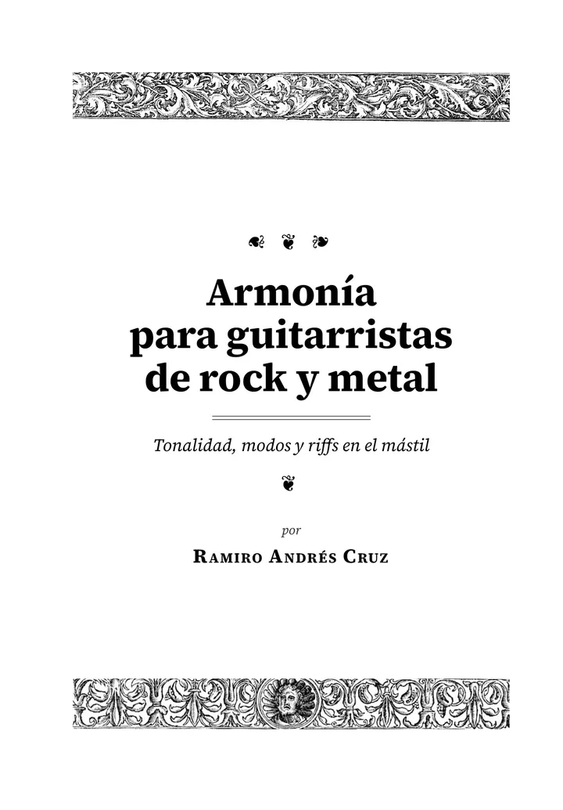
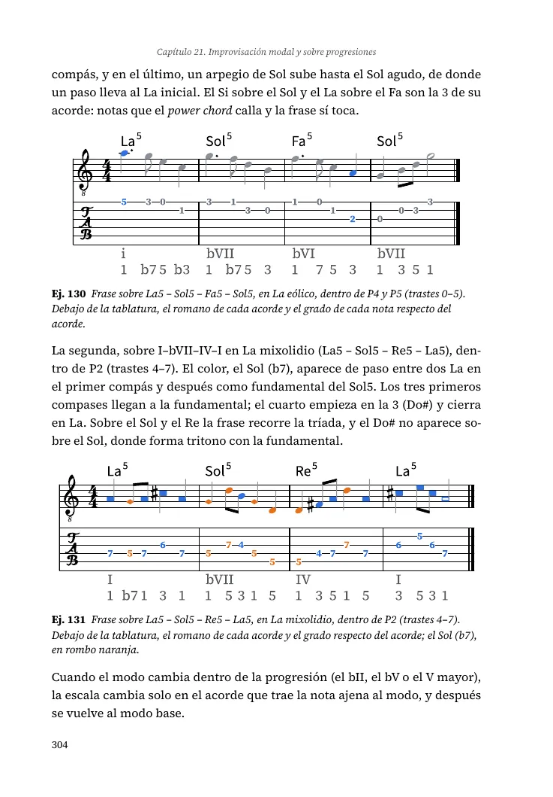
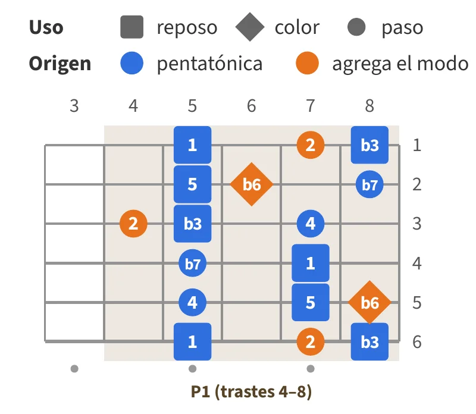
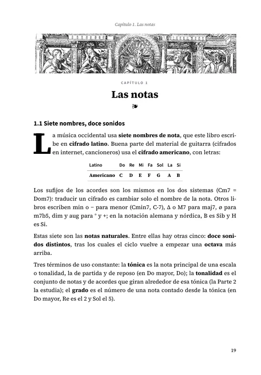
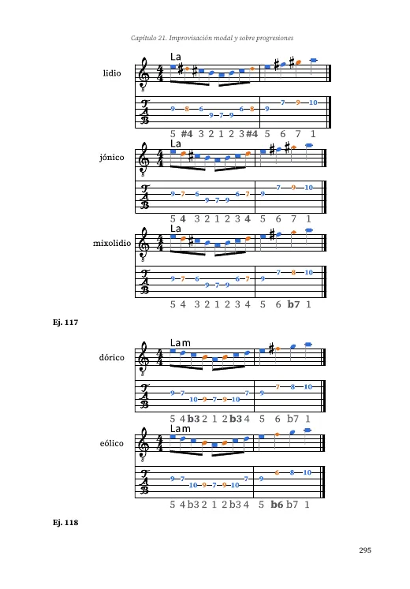
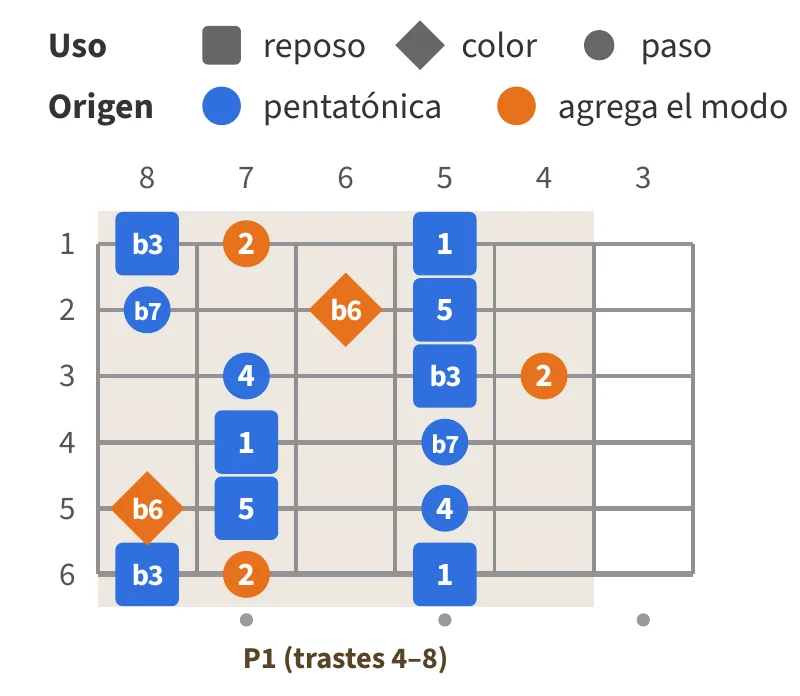
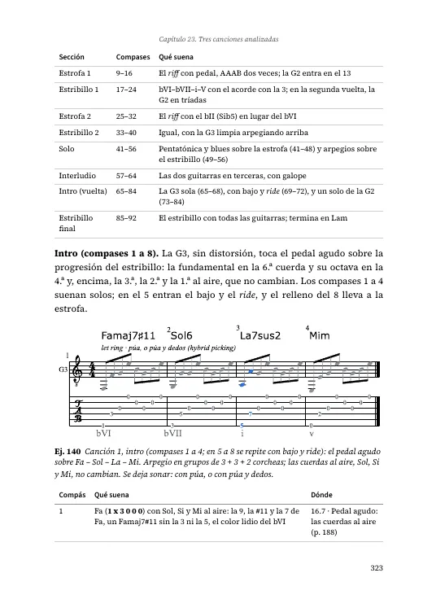
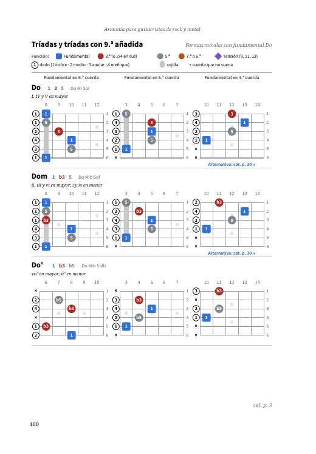
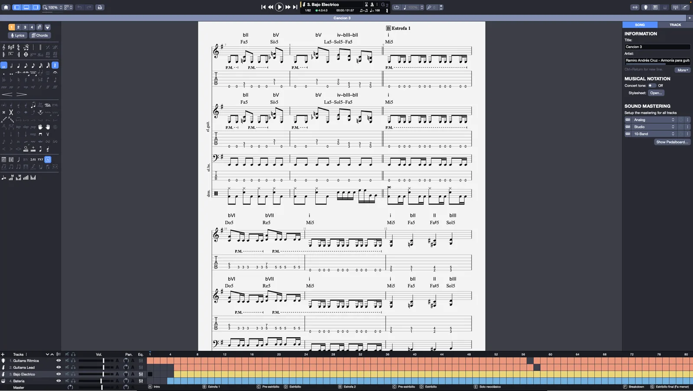

La forma y el color dicen algo
En los diagramas de los modos, cada nota dice qué hace por su forma: cuadrado, reposo; rombo, color; círculo, paso . Y el color dice de dónde viene. El catálogo de acordes tiene su propia leyenda.
Serie Mástil · Libro 1 · PDF a color · Ya a la venta
Tonalidad, modos y riffs en el mástil
Un libro para entender lo que tocás: por qué los acordes van juntos, cómo funcionan los modos y cómo se arma un riff. Con la guitarra en la mano, de la primera página a la última.
$ 22.000, o 3 cuotas sin interés de $ 7.333. Precio de lanzamiento hasta el 30 de noviembre. Ya está disponible: lo recibís dentro de las 24 horas.


Para quién
Para el guitarrista de rock y de metal que ya toca algunas canciones y quiere saber qué está haciendo. Alcanza con armar un power chord y una caja de la pentatónica; no hace falta leer partitura.
Todo se explica con temas que ya conocés: el tritono de «Black Sabbath» y de «Enter Sandman», el bII de «Symphony of Destruction», las cuartas de «Smoke on the Water», el eólico de «The Trooper».
No es un libro de jazz ni de técnica: es armonía pensada para el rock y el metal.

Qué enseña
Las notas en el mástil, los intervalos, la escala mayor y los acordes, con los power chords.
Por qué un acorde pide ir a otro: funciones, cadencias y tonalidades menores.
De la pentatónica a los siete modos, con sus posiciones, sus arpegios y una ficha para cada uno.
La menor armónica y el sonido neoclásico, los acordes simétricos y la modulación.
Improvisar, escribir riffs y tres canciones completas, analizadas compás por compás.
Al final: un catálogo de acordes para imprimir, uno de progresiones, glosario, respuestas e índice alfabético.
Cómo es
En la computadora, en la tablet o impreso. Con grabados del Renacimiento, tipografía cuidada y un sistema gráfico que no cambia de una página a otra.
En los diagramas de los modos, cada nota dice qué hace por su forma: cuadrado, reposo; rombo, color; círculo, paso . Y el color dice de dónde viene. El catálogo de acordes tiene su propia leyenda.
Cada ejemplo del libro está en el archivo, con el mismo número y con bajo y batería: para escucharlo, bajarle el tempo o tocar encima. También lo abren TuxGuitar y MuseScore, que son gratis.
Vienen las dos. En la zurda, todos los diagramas van espejados, para guitarra de zurdo. El autor es zurdo y escribe en esa edición. Mirá la muestra zurda.
Cada ejemplo va en los dos, con el acorde arriba y los grados abajo.
Hojear
Tocá una página para verla grande. Si querés leer más, la muestra gratis tiene 35 páginas: edición diestra o edición zurda.





Escuchar
Instrumentales, con las guitarras grabadas por el autor. Debajo de cada una, qué suena en cada momento y en qué tema del libro se explica, como en el análisis compás por compás de las canciones.
En esta toma, los arpegios de la limpia van tocados a gusto, no nota por nota como en el libro.

Comprar
Pagás y, dentro de las 24 horas, te compartimos una carpeta de Google Drive al correo de tu cuenta de Google. Ahí están los dos PDF, los ejemplos y las canciones, y ahí llegan las versiones nuevas del libro.
Argentina
$ 22.000 pesos · precio de lanzamiento hasta el 30/11
Tarjeta en 3 cuotas sin interés de $ 7.333, transferencia o dinero en cuenta. Al pagar, usá el correo de tu cuenta de Google. Precio de lista: $ 24.900.
Comprar con Mercado PagoResto del mundo
USD 20 precio de lanzamiento hasta el 30/11
En USDT o USDC: escribinos y te pasamos los datos (Mercado Pago no acepta tarjetas de afuera). Precio de lista: USD 25.
Comprar en cripto¿Dudas antes de comprar? Escribinos y te respondemos.
EscribirAntes de pagar, leé las condiciones de venta: quién vende, cómo se entrega y cómo usar el botón de arrepentimiento.
Próximo libro · en preparación
Riffs, melodías y canciones
El segundo libro de la serie empieza donde termina este: cómo escribir una canción completa de rock o de metal, de la primera idea al final.
Previsto para fines de 2026, con el mismo formato.
El autor
Toca la guitarra desde hace unos veinte años; hoy, heavy metal clásico y neoclásico. Estudió en el Conservatorio Juan José Castro (FOBA y tres años del profesorado con orientación en instrumento), dio clases durante cinco años y condujo la práctica de ensamble como ayudante de cátedra.
Tocó cada diagrama, cada ejemplo y las tres canciones mientras escribía el libro. Es zurdo, y por eso la serie sale en las dos ediciones. Escribe desde Tortuguitas, Buenos Aires.
Novedades, páginas del libro y fragmentos de las canciones en Instagram y Facebook (@mastil.musica).
Condiciones de venta
Ramiro Andrés Cruz, CUIT 20-36754592-6, monotributista. Domicilio: Juan Francisco Seguí 3907, Tortuguitas (CP 1667), provincia de Buenos Aires, Argentina. Correo: ramiroandrescruz@gmail.com.
Una licencia de uso personal del libro en PDF (ISBN 978-631-01-9367-0) y de sus archivos de Guitar Pro y de audio, con las versiones nuevas en la misma carpeta, sin volver a pagar. Los precios en pesos son finales. Los precios en dólares se pagan en USDT o USDC. El acceso a la carpeta de Google Drive se comparte con el correo de tu cuenta de Google dentro de las 24 horas del pago. Con una compra podés imprimir el libro para tu uso y mostrar sus páginas en una clase; lo que no se puede es repartir copias ni revender, compartir o publicar los archivos. Para un instituto o varias copias, escribinos. Estas condiciones valen igual para compras desde cualquier país.
Podés arrepentirte de la compra dentro de los 10 días corridos mientras no hayas recibido el acceso a la carpeta: te devolvemos el total por el mismo medio con que pagaste. Una vez compartida la carpeta, el libro es un archivo digital entregado para su descarga inmediata, y la ley lo exceptúa del derecho de revocación (artículo 1116 del Código Civil y Comercial). Si un archivo no abre o tiene un problema, escribinos igual y lo resolvemos. Y si encontrás un error en el libro (un diagrama mal espejado, una tablatura mal numerada, una nota equivocada), escribinos: lo corregimos dentro de los 7 días y la versión corregida llega a la misma carpeta, sin volver a pagar. Para decidir antes de pagar están la muestra, en las dos ediciones, y el correo para cualquier duda.
No hace falta registrarse ni dar explicaciones: tocá el botón, completá los datos de la compra y enviá el correo. Te respondemos por el mismo medio dentro de las 24 horas, con un código de solicitud.
Botón de arrepentimientoSi el botón no abre tu programa de correo, escribí a ramiroandrescruz@gmail.com con el asunto «Arrepentimiento».
Esta web no usa cookies, no tiene formularios y no carga nada de otros sitios. Cloudflare, que la sirve, procesa datos técnicos de cada visita (dirección IP, navegador) por seguridad y para contar visitas sin identificar a nadie. De quien compra usamos el nombre y el correo que llegan con el pago, solo para entregar el libro, avisar de sus versiones nuevas y responder consultas: no se ceden a nadie ni se usan para publicidad. Para ver, corregir o borrar tus datos, escribí al correo de arriba (Ley 25.326).
El titular de los datos personales tiene la facultad de ejercer el derecho de acceso a ellos en forma gratuita a intervalos no inferiores a seis meses, salvo que acredite un interés legítimo (artículo 14, inciso 3, de la Ley 25.326). La Agencia de Acceso a la Información Pública, órgano de control de la Ley 25.326, atiende las denuncias y reclamos de quienes resulten afectados en sus derechos por el incumplimiento de las normas de protección de datos personales.